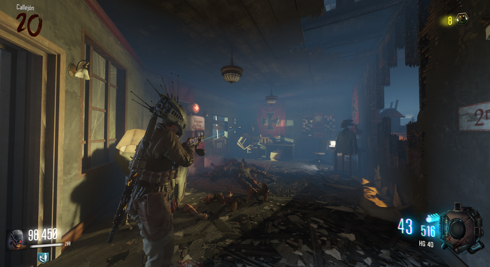
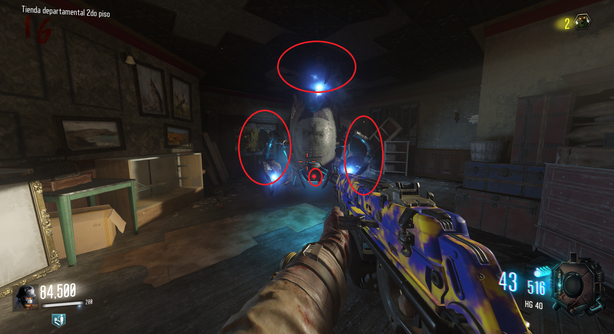
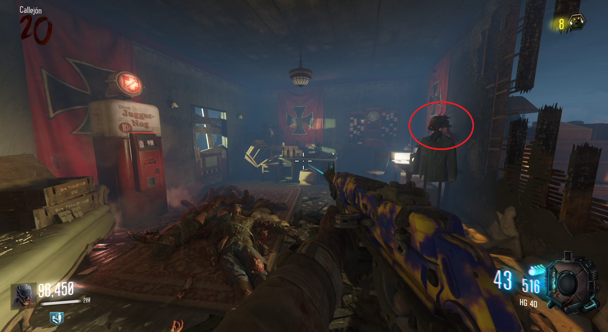

Casco de Valkyrie (Gorod Krovi)

Propiedades del casco:
50% menos de daño recibido de los Valkyrie.
30% más de daño al atacar Valkyrie.
Cómo obternerlo:
1. Destrozar todos los brazos de 5 drones Valkyrie.
2. Apagar la cámara de 5 drones Valkyrie.

Después iremos al Jugger-Nog en Department Store, y veremos el casco.
